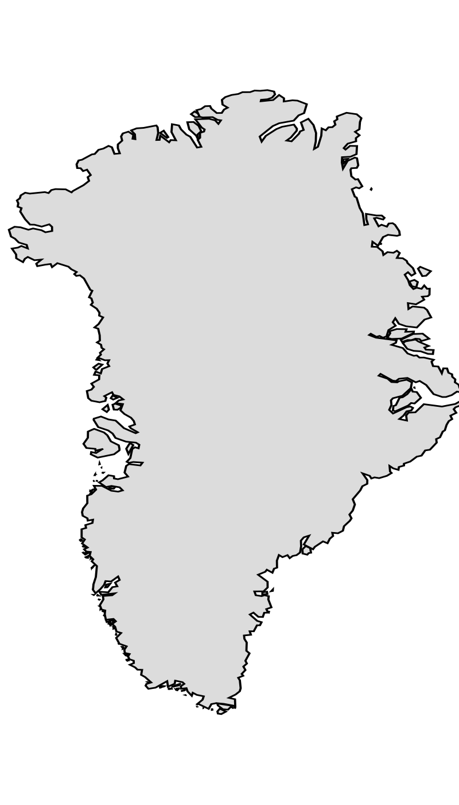
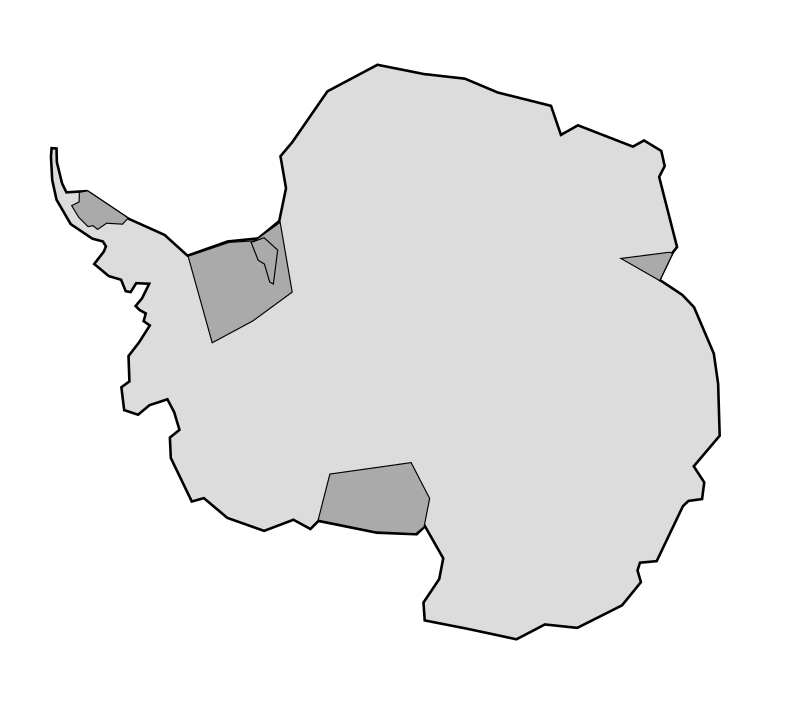

NetCDF Extractor#
Basic Usage#
The SHIVER Data Cube Extractor lets you quickly and easily extract a ‘data cube’ of ice velocity measurements for any time period and location on the Greenland and Antarctic ice sheets. Just navigate to your glacier of interest and draw a polygon or upload a shapefile and select your time period and variables/data sources of interest then initiate the download.
Your download request will be sent to the server and you will be emailed with a download link once the data cube extraction is complete.
SHIVER allows you to extract ice velocity data cubes in Greenland or Antarctica. You can navigate to your preferred ice sheet by clicking the Greenland button (

) or the Antarctica button (
).Data Cube limits: To reduce the load on our server, we limit individual data cube extraction volumes to a maximum of 15,000 kilometres squared and one year. If you require a larger data cube, then split your download into multiple requests or contact the SHIVER team via email (shiver@sheffield.ac.uk) with your request.
Uploading Files #
You can upload a file by clicking the symbol.
Requirements:
Format: KMZ, KML, GeoJSON or a zipped shapefile (containing .shp, .shx, .dbf, and .prj files).
Projection: Must be in WGS84 (EPSG:4326).
Type: Point or Multipoint geometries only. Maximum of ten points.
Output#
The retrieved data cubes will be in NetCDF format.
NetCDF naming convention:
IceSheet_multisource_StartTime_EndTime_RANDOM.nc e.g.,
Greenland_native_2018-01-01_2018-03-31_6j48egb.nc. Is a data cube for Greenland from the 1st of January 2018 to the 31st of March 2018.
Each NetCDF file contains:
Note: Only “x”, “y”, and “time” are exported by default. Other exported variables depend on the selected options.
x: The easting coordinates of the grid, in the local projection.
y: The northing coordinates of the grid, in the local projection.
time: The date of the measurement. This represents the mid-date of the measurement epoch.
speed: Horizontal ice surface velocity magnitude in metres per year.
vx: Horizontal ice surface easting velocity in metres per year (positive in the polar stereographic eastwards direction).
vy: Horizontal ice surface northing velocity in metres per year (positive in the polar stereographic northwards direction).
speed_error: Horizontal ice surface velocity magnitude error in metres per year. This is as provided with each of the underlying data sources or 5% of the speed if no error is provided.
vx_error: Horizontal ice surface easting velocity error in metres per year. This is as provided with each of the underlying data sources or 5% of the absolute easting velocity if no error is provided.
vy_error: Horizontal ice surface northing velocity error in metres per year. This is as provided with each of the underlying data sources or 5% of the absolute northing velocity if no error is provided.
data_source: The name of the data source corresponding to each row in ‘time’ i.e. each measurement epoch in ‘speed’.
time_separation: The number of days between the two images used to estimate ice speed. So the first image was acquired on
time-time_separation/2, and the second image ontime+time_separation/2.
References#
Luetzenburg, Gregor; Korsgaard, Niels J.; Deichmann, Anna K.; Socher, Tobias; Gleie, Karin; Scharffenberger, Thomas; Fahrner, Dominik; Nielsen, Eva B.; How, Penelope; Bjork, Anders A.; Kjeldsen, Kristian K.; Ahlstrom, Andreas P.; Fausto, Robert S., 2025, “PROMICE-2022 Ice Mask”, https://doi.org/10.22008/FK2/O8CLRE, GEUS Dataverse, V3.
Gerrish, L., Ireland, L., Fretwell, P., Cooper, P., & Skachkova, A. (2025). Medium resolution vector polylines of the Antarctic coastline (Version 7.11) [Data set]. NERC EDS UK Polar Data Centre. https://doi.org/10.5285/333065a9-633d-4005-ae41-fb7ae5ae7a91.
Wallis, B.J., Hogg, A.E., Zhu, Y. and Hooper, A., 2024. Change in grounding line location on the Antarctic Peninsula measured using a tidal motion offset correlation method. The Cryosphere, 18(10), pp.4723-4742. https://doi.org/10.5194/tc-18-4723-2024.
Howat, Ian, et al., 2022, The Reference Elevation Model of Antarctica - Mosaics, Version 2, https://doi.org/10.7910/DVN/EBW8UC, Harvard Dataverse, V1, [16/02/2026].
Howat, I., Negrete, A. & Smith, B. (2015). MEaSUREs Greenland Ice Mapping Project (GIMP) Digital Elevation Model. (NSIDC-0645, Version 1). [Data Set]. Boulder, Colorado USA. NASA National Snow and Ice Data Center Distributed Active Archive Center. https://doi.org/10.5067/NV34YUIXLP9W. [describe subset used if applicable]. Date Accessed 02-16-2026.
Cook AJ, Vaughan DG, Luckman AJ, Murray T. A new Antarctic Peninsula glacier basin inventory and observed area changes since the 1940s. Antarctic Science. 2014;26(6):614-624. doi:10.1017/S0954102014000200
Mouginot J, Rignot E (2019). Glacier catchments/basins for the Greenland Ice Sheet [Dataset]. Dryad. DOI: 10.7280/D1WT11
Mankoff, K.D., No?l, B., Fettweis, X., Ahlstr?m, A.P., Colgan, W., Kondo, K., Langley, K., Sugiyama, S., Van As, D. and Fausto, R.S., 2020. Greenland liquid water discharge from 1958 through 2019. Earth System Science Data, 12(4), pp.2811-2841. DOI: https://doi.org/10.5194/essd-12-2811-2020.
Mankoff, K. D.: Freshwater runoff, GEUS Dataverse, https://doi.org/10.22008/promice/freshwater, 2020.